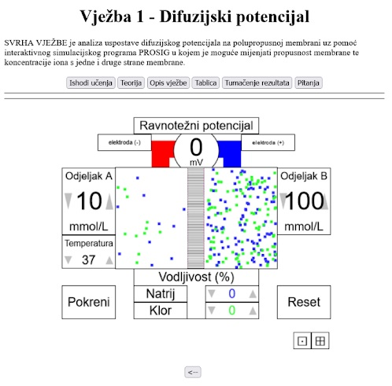
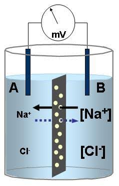
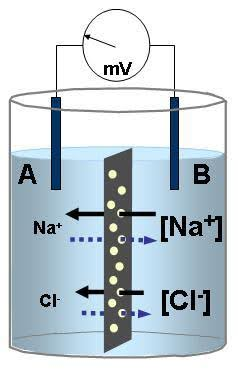

SVRHA VJEŽBE je analiza uspostave difuzijskog potencijala na polupropusnoj membrani uz pomoć interaktivnog simulacijskog programa PROSIG u kojem je moguće mijenjati propusnost membrane te koncentracije iona s jedne i druge strane membrane.
PURPOSE OF THE EXERCISE: to analyse how a diffusion potential is established across a semi-permeable membrane using the interactive simulation program PROSIG, in which the permeability of the membrane and the ion concentrations on either side of it can be changed.
Ioni difundiraju niz koncentracijski gradijent; budući da nose naboj, njihova difuzija stvara razliku potencijala na membrani.
Ako je membrana propusna za jedan ion, potencijal je Nernstov ravnotežni potencijal — ovisi samo o omjeru koncentracija, ne o veličini vodljivosti.
Ako je propusna za više iona, vrijedi Goldmanova jednadžba: potencijal je bliži ravnotežnom potencijalu iona s većom vodljivošću.
Ions diffuse down their concentration gradient; because they carry charge, their diffusion creates a potential difference across the membrane.
If the membrane is permeable to one ion, the potential is the Nernst equilibrium potential — it depends only on the concentration ratio, not on how large the conductance is.
If it is permeable to several ions, the Goldman equation applies: the potential lies closer to the equilibrium potential of the ion with the higher conductance.
Nakon obrade ove vježbe moći ćete:
objasniti pojam difuzijski potencijal i navesti pod kojim se uvjetima može uspostaviti na membrani
imenovati čimbenike koji mogu utjecati na difuzijski potencijal, opisati mehanizam njihova djelovanja i predvidjeti u kojem će smjeru mijenjati potencijal
objasniti pojmove Nernstova i Goldmanova jednadžba, opisati njihove međusobne razlike i predvidjeti pod kojim se uvjetima na membrani one primjenjuju
primijeniti Nernstovu i Goldmanovu jednadžbu i izračunati potencijale na membrani
predvidjeti i interpretirati učinke promjena koncentracija iona na uspostavu difuzijskog potencijala
predvidjeti i interpretirati učinke promjena vodljivosti membrane za ione na uspostavu difuzijskog potencijala
TEORIJSKI DIO. Za razumijevanje nastanka difuzijskog potencijala neophodno je podsjetiti se osnovne strukture i funkcije biološke membrane. Stanična membrana okružuje unutarstanični prostor i odjeljuje ga od izvanstanične tekućine. Osnovu membrane čini dvosloj fosfolipida (debljine oko 7 nm) u koji su uronjene molekule bjelančevina. U dvosloju su molekule fosfolipida orijentirane tako da su im polarne (hidrofilne) glave okrenute prema unutarstaničnoj i izvanstaničnoj tekućini, dok su apolarni (hidrofobni) repovi okrenuti jedni prema drugima. Na ovaj način dvosloj lipida postaje nepropusna barijera za sve tvari koje nisu topljive u lipidima (ioni, aminokiseline, glukoza i sl.). Zbog važnosti za normalno funkcioniranje stanice prijenos ovih tvari kroz membranu omogućen je bjelančevinama koje prolaze kroz lipidni dvosloj (transmembranske bjelančevine). Posredstvom ovih bjelančevina stanice neposredno nadziru prijenos tvari između unutarstaničnog i izvanstaničnog prostora.
Transmembranske bjelančevine sudjeluju u prijenosu tvari kroz membranu kao nosači i kanali. O bjelančevinama kao nosačima govorimo kad je prijenos tvari kroz membranu posredovan vezanjem tvari koje se prenose za specifična vezna mjesta na transmembranskoj bjelančevini. Ovaj prijenos može biti pasivan ili aktivan. U pasivnom se prijenosu tvari kreću niz koncentracijski gradijent pa je smjer prijenosa određen koncentracijama tvari s jedne i druge strane membrane (olakšana difuzija). Ukoliko se tvari prenose nasuprot koncentracijskom gradijentu i pri tome se za prijenos troši energija tada kažemo da je prijenos aktivan. Primjer za ovakav prijenos je Na/K-ATPaza ili Na/K crpka. Transmembranske bjelančevine mogu formirati kanale kroz koje ioni (polarne čestice) prolaze s jedne na drugu stranu membrane. Ovo je kretanje iona kroz kanale selektivno, pa tako kanali dopuštaju prijenos jednih, a sprječavaju prijenos drugih čak i manjih iona. Stoga se može reći da ionski kanali nisu samo otvorene rupe različitog promjera već su specifični za ione koje propuštaju. U membrani nalazimo dvije vrste ionskih kanala od kojih su jedni uvijek otvoreni i nazivamo ih pasivni kanali, dok su drugi u mirovanju zatvoreni i otvaraju se tek na odgovarajući podražaj zbog čega se nazivaju aktivni kanali.
U svrhu razumijevanja nastanka difuzijskog potencijala promatrat ćemo staničnu membranu kao polupropusnu membranu koja odvaja dva vodena odjeljka s različitim koncentracijama iona. Budući da svaki sustav nastoji uspostaviti stanje ravnoteže tako i u ovom sustavu ioni prelaze iz jednog odjeljka u drugi niz svoj koncentracijski gradijent u cilju izjednačavanja koncentracija s jedne i druge strane membrane. Međutim, suprotno kretanju neutralnih tvari, kretanje iona podrazumijeva i kretanje naboja kroz membranu što za posljedicu ima stvaranje električnog gradijenta kroz membranu. Iz navedenog proizlazi da na difuziju iona kroz polupropusnu membranu utječu dvije sile: (i) razlika u koncentraciji (kemijski gradijent) i (ii) razlika u potencijalu (električni gradijent). Do stanja ravnoteže dolazi kad se uspostavi ravnoteža između električnog i kemijskog gradijenta (elektrokemijska ravnoteža). Drugim riječima do elektrokemijske ravnoteže dolazi onda kad u jedinici vremena difuzija iona u jednom smjeru zbog razlike u koncentraciji postane jednaka njegovoj difuziji u suprotnom smjeru zbog razlike u električnom potencijalu. Dakle, pri potencijalu membrane na kojem se uspostavlja elektrokemijska ravnoteža neto difuzija iona je jednaka nuli. Ovu vrijednost membranskog potencijala nazivamo ravnotežni potencijal za dotični ion. Ravnotežni potencijal za bilo koji ion može se izračunati upotrebom Nernstove jednadžbe (vidi Dodatni okvir 1.1.). Iz Nernstove jednadžbe je očito da na vrijednost ravnotežnog potencijala presudni utjecaj ima koncentracija iona. Ako je koncentracija iona na obje strane membrane jednaka, snaga koncentracijskog gradijenta bit će nula pa će i ravnotežni potencijal biti nula. Što je koncentracijski gradijent veći to će biti veći i ravnotežni potencijal. Nernstovu jednadžbu možemo koristiti kad je membrana propusna isključivo za jedan ion.
Dodatni okvir 1.1. Nernstova jednadžba
Na uspostavljanje ravnotežnog potencijala važan utjecaj imaju (i) koncentracije iona s obje strane membrane, (ii) temperatura otopine u kojoj se ioni nalaze, (iii) valencija iona i (iv) količina rada potrebnog za razdvajanje naboja na membrani. Za izračunavanje potencijala pri kojem se uspostavlja elektrokemijska ravnoteža koristimo se jednadžbom koju je 1888. god. izveo njemački kemičar W. Nernst, a koja glasi:
Eion = RTzF ln CBCA
U jednadžbi Eion predstavlja potencijal membrane pri kojem je ion u elektrokemijskoj ravnoteži, R je plinska konstanta (8,31 J/K/mol), T je temperatura u Kelvinima (TKelvin = 273 + °C), F je Faradayeva konstanta (96 500 C/mol), z je valencija iona (broj i predznak naboja iona), ln je prirodni logaritam, dok CB i CA predstavljaju koncentracije iona u jednom odnosno drugom vodenom odjeljku.
Prevođenjem prirodnog logaritma u dekadski logaritam ova jednadžba poprima oblik:
Eion = 2,303 RTzF log CBCA
Budući da su u jednadžbi R i F konstante, a pri konstantnoj temperaturi je i T konstantna, tada će cijeli izraz RT/F biti konstantan. Stoga se, za monovalentni kation (pozitivno nabijena čestica) pri tjelesnoj temperaturi (37 °C), jednadžba može reducirati na:
Eion = 61 log (CB/CA)
dok će za monovalentni anion (negativno nabijena čestica) pri tjelesnoj temperaturi (37 °C) reducirani oblik jednadžbe glasiti:
Eion = − 61 log (CB/CA)
Iz jednadžbe jasno proizlazi da je vrijednost ravnotežnog potencijala logaritamska funkcija omjera koncentracija difuzibilnog iona s jedne i druge strane membrane.
U stvarnosti stanična membrana nije propusna samo za jedan ion, već za više njih, pa se za izračunavanje vrijednosti potencijala mirovanja moraju u obzir uzeti i doprinosi ostalih iona u stvaranju potencijala. Stoga, za izračunavanje potencijala na membrani koja je propusna za više od jednog iona koristimo Goldman-Hodgkin-Katzovu jednadžbu (vidi Dodatni okvir 1.2.). Iz praktičnih razloga se naziv jednadžbe često skraćuje na Goldmanova jednadžba.
Kad je membrana propusna za više iona svaki pojedini difuzibilni ion nastoji postići svoj ravnotežni potencijal i prema tome nastoji pomaknuti potencijal membrane prema svom ravnotežnom potencijalu. Što je membrana propusnija za jedan ion to će uspostavljeni potencijal membrane biti bliže ravnotežnom potencijalu tog iona. Stoga, uspostavljeni potencijal membrane propusne za više od jednog iona predstavlja ravnotežu ravnotežnih potencijala za ione koji prolaze kroz membranu. Pri uspostavljenom potencijalu nema neto-kretanja naboja kroz membranu pa kažemo da se potencijal membrane nalazi u ravnotežnom stanju.
Dodatni okvir 1.2. Goldman-Hodgkin-Katzova jednadžba (GHK ili Goldmanova jednadžba)
Jednadžba opisuje postojano stanje membranskog potencijala za zadane koncentracije iona unutar i izvan stanice i relativnu propusnost membrane za svaki od ovih iona:
Em = 2,303 RTF log10PNa[Na⁺]B + PCl[Cl⁻]APNa[Na⁺]A + PCl[Cl⁻]B
U jednadžbi Em predstavlja membranski potencijal pri kojem su ioni u ravnoteži (nema neto protoka iona), R je plinska konstanta (8,31 J/K/mol), T je temperatura u Kelvinima (Tkelvin = 273 + °C), F je Faradayeva konstanta (96 500 C/mol), PNa i PCl su propusnosti za Na⁺ i Cl⁻, dok [ion]A i [ion]B predstavljaju koncentracije iona u odjeljku A odnosno odjeljku B.
Iz jednadžbe je očito da je doprinos svakog pojedinog iona u uspostavljanju membranskog potencijala određen razlikom koncentracija s obje strane membrane te propusnošću membrane za pojedini ion.
Ako dobro razmotrite Goldmanovu jednadžbu uočit ćete da propusnost membrane za pojedine ione ima značajan utjecaj na vrijednost uspostavljenog membranskog potencijala. Ovo je različito od Nernstove jednadžbe u kojoj propusnost membrane za ione nema nikakvog utjecaja na postizanje ravnotežnog potencijala. Što je propusnost membrane za pojedini ion veća to će se vrijednost uspostavljenog membranskog potencijala više približavati ravnotežnom potencijalu za dotični ion. S druge strane, ako je uspostavljeni potencijal membrane jednak ravnotežnom potencijalu nekog iona, onda nema neto sile na taj ion i nema neto toka tog iona. Ukoliko uspostavljeni potencijal nije jednak ravnotežnom potencijalu nekog iona onda se razlika između uspostavljenog potencijala i ravnotežnog potencijala tog iona može smatrati pokretačkom silom za taj ion. Iz ovog proizlazi da svako povećanje vodljivosti membrane za pojedini ion za kojeg postoji pokretačka sila rezultira pomakom potencijala membrane prema ravnotežnom potencijalu tog iona.
Iz svega navedenog možemo zaključiti da su za stvaranje difuzijskog potencijala kroz membranu bitna dva preduvjeta: (1) da postoji nejednolika raspodjela iona s jedne i druge strane membrane i (2) da postoji razlika u propusnosti membrane za pojedine ione.
IZVOĐENJE VJEŽBE
Za izvođenje vježbe koristi se prvi od četiri modula simulacijskog programa „PROSIG“ namijenjenog za učenje potencijala membrane. PROSIG je interaktivni simulacijski program koji korisniku omogućuje da nauči kako na uspostavu potencijala membrane i generiranje akcijskog potencijala utječu individualne ili kombinirane promjene vrijednosti pojedinih promjenjivih varijabli poput koncentracija iona, vodljivosti stanične membrane, temperature, jačine podražaja i blokatora. Prvi modul namijenjen je za učenje osnova difuzijskog potencijala.
Radno sučelje je podijeljeno u dva dijela: interaktivni i prezentacijski. Interaktivni dio (lijevo) obuhvaća tri promjenjive varijable: koncentracije iona u odjeljcima, vodljivost membrane za natrij i klor te temperaturu pri kojoj se odvijaju reakcije. Vrijednosti se mijenjaju gumbima −/+, klizačem ili izravnim upisom broja.
Prezentacijski dio obuhvaća animaciju kretanja iona i voltmetar koji prikazuje ishod (promjene voltaže) provedenih promjena. Animacija prikazuje difuziju iona kroz polupropusnu membranu iz jednog u drugi vodeni odjeljak i obratno; duljina strelica na membrani razmjerna je neto toku pojedinog iona. U odjeljak A je uronjena negativna, a u odjeljak B pozitivna registracijska elektroda voltmetra.

Slika 1.2. Radno sučelje izvorne verzije vježbe za simulaciju difuzijskog potencijala.
POSTUPAK IZVOĐENJA VJEŽBE
Prije početka izvođenja vježbe studenti bi trebali proučiti koji su očekivani ishodi ove vježbe, pripremiti gradivo opisano na stranici Teorija te se upoznati s načinom izvođenja vježbe. U tu svrhu predviđeno je da nakon provedenih promjena pojedinih varijabli, studenti najprije u tablicu upišu svoja očekivanja o tome kakvu će promjenu prikazati voltmetar, a zatim će pokretanjem simulacije provjeriti jesu li ispravno predvidjeli smjer i veličinu promjene.
simulaciju započinjete promjenama koncentracija u odjeljku A i/ili odjeljku B;
nakon što postavite željene koncentracije iona u oba odjeljka, isti postupak ponovite za vodljivosti iona uključenih u simulaciju (natrij i/ili klorid);
po potrebi isto možete ponoviti i za temperaturu otopina u odjeljcima;
nakon što ste u tablicu upisali očekivanu vrijednost kliknite na gumb Pokreni i očitajte vrijednost prikazanu na voltmetru;
postupak ponavljate za različite vrijednosti promjenjivih varijabli.
Gumb Tablica predstavlja „virtualnog voditelja“ čija je zadaća da vas vodi kroz različite unaprijed definirane vrijednosti promjenjivih varijabli. U obnovljenoj verziji svaki redak tablice ima gumb ▶ Postavi koji vrijednosti iz tog retka prenosi u simulaciju i gumb ⤓ Očitaj koji rezultat simulacije upisuje u tablicu. Vrijednosti u tablici su određene prema logičkom slijedu počevši od savladavanja najprije lakih zadataka prema sve kompleksnijim.
Gumb Reset vraća promjenjive varijable na njihove početne vrijednosti: vodljivosti membrane za natrij i klor se vraćaju na 0 %, dok se koncentracija iona u odjeljku B postavlja na 100 mmol/L, a u odjeljku A na 10 mmol/L.
PRIKAZ I TUMAČENJE REZULTATA. U simulaciji se mogu testirati učinci promjene propusnosti membrane za dva različita iona i/ili promjene koncentracija iona s obje strane membrane na uspostavljanje difuzijskog potencijala na polupropusnoj membrani. U ovom se testiranju polupropusna membrana može učiniti vodljivom isključivo za jedan ion, dok je za drugi ion nepropusna ili se učini različito propusnom za svaki pojedini ion. Početne koncentracije iona su postavljene tako da su one u vodenom odjeljku B deseterostruko veće od onih u odjeljku A. Stoga, sila koncentracijskog gradijenta usmjerava ione iz odjeljka B u odjeljak A. Obratite pažnju da se pri započinjanju simulacije ioni gibaju u svim smjerovima, međutim neto je kretanje prema strani s nižom koncentracijom. Što je razlika u koncentraciji veća to je i neto kretanje iona veće. Dakle, neto kretanje iona je moguće promatrati kao rezultat sile koja pokreće ione niz koncentracijski gradijent.
Ako želimo testirati hipotezu u kojoj je polupropusna membrana propusna isključivo za jedan ion (Slika 1.3.) tada ćemo u polju za vodljivosti iona postaviti vodljivost za Na⁺ na 100 %, a vodljivost za Cl⁻ na 0. Nakon pokretanja simulacije, Na⁺ će zbog koncentracijskog gradijenta difundirati iz odjeljka B u odjeljak A, dok istodobno Cl⁻ neće difundirati jer membrana nije propusna za taj ion. Ako je hipoteza dobra tada će potencijal na membrani biti jednak ravnotežnom potencijalu za Na⁺ (Em = ENa). Uslijed difuzije Na⁺ na membrani se razdvajaju naboji, pri čemu će se na lijevoj strani membrane (odjeljak A) pojaviti relativni višak pozitivnih naboja, dok će se na desnoj strani (odjeljak B) pojaviti manjak pozitivnih naboja. Posljedica je ove difuzije nastanak razlike potencijala kroz polupropusnu membranu. Uspostavljena razlika potencijala čini silu koja na difuzibilne ione djeluje tako da se vrate nazad u odjeljak B. Dakle, sada na difuziju Na⁺ djeluju dvije sile; zbog koncentracijskog gradijenta tjera Na⁺ iz odjeljka B u odjeljak A, dok novouspostavljena sila zbog električnog gradijenta tjera Na⁺ u suprotnom smjeru, iz odjeljka A u odjeljak B. Do elektrokemijske ravnoteže dolazi kad se ove dvije sile izjednače po veličini. U uspostavljenom stanju elektrokemijske ravnoteže neto difuzija iona jednaka je nuli. Potencijal na membrani pri kojem se uspostavlja stanje elektrokemijske ravnoteže izračunava se Nernstovom jednadžbom. Taj potencijal bit će to veći što je razlika u koncentraciji iona između jednog i drugog odjeljka veća.

Slika 1.3. Difuzijski potencijal na membrani propusnoj samo za jedan ion. Koncentracije iona u odjeljku B su veće od onih u odjeljku A zbog čega dolazi do kretanja iona iz odjeljka B u odjeljak A uslijed koncentracijskog gradijenta (puna strelica). Budući da ion nosi naboj uspostavlja se električni gradijent (iscrtkana strelica) kroz membranu koji tjera ione nazad, iz odjeljka A u odjeljak B.
Ukoliko želimo testirati propusnost membrane za oba iona (Slika 1.4.), pri čemu je membrana različito propusna za svaki ion, tada ćemo upisivanjem različitih vrijednosti (od 0 do 100 %) u polja za vodljivost membrane za pojedini ion učiniti membranu bolje vodljivom za jedan nego za drugi ion. U ovom slučaju koristimo Goldmanovu, a ne Nernstovu jednadžbu, budući da ona u obzir uzima različite propusnosti membrane za ione. Razmotrimo slučaj u kojem je membrana dvostruko propusnija za Na⁺ (100 %) u odnosu na propusnost membrane za Cl⁻ (50 %). Nakon započinjanja simulacije, Na⁺ i Cl⁻ će zbog koncentracijskog gradijenta difundirati iz odjeljka s većom koncentracijom (odjeljak B) u odjeljak s manjom koncentracijom (odjeljak A), međutim zbog razlike u propusnosti difuzija Na⁺ će biti dvostruko brža od difuzije Cl⁻. Zbog difuzije Na⁺, strana membrane prema odjeljku A postaje jače pozitivna, dok će strana membrane okrenuta prema odjeljku B biti manje pozitivna. Istodobno, uslijed difuzije Cl⁻ strana membrane okrenuta prema odjeljku A postat će negativnija. Budući da je propusnost membrane veća za Na⁺ nego za Cl⁻, više će Na⁺ u jedinici vremena difundirati kroz membranu pa se elektrokemijska ravnoteža uspostavlja na razini koja je bliža ravnotežnom potencijalu za Na⁺ nego ravnotežnom potencijalu za Cl⁻. Iz Goldmanove jednadžbe je očito da će uspostavljeni potencijal membrane biti to bliži ravnotežnom potencijalu za Na⁺ što je propusnost membrane za Na⁺ veća.

Slika 1.4. Difuzijski potencijal na membrani propusnoj za dva iona. Odjeljak A je od odjeljka B odijeljen membranom različito propusnom za oba iona.
Prije nego što kliknete na gumb „Pokreni“, nakon prethodno provedene promjene vrijednosti pojedine varijable, predvidite kako će promjena koju ste proveli utjecati na vrijednost potencijala na membrani (Em). Svoja predviđanja upišite u odgovarajuću kolonu u Tablici 1.1. Usporedite svoja predviđanja s rezultatom koji ste očitali na voltmetru.
Kako se povećava razlika potencijala kroz membranu sa svakim povećanjem koncentracije pozitivnog iona koji prolazi kroz membranu?
Usporedite učinke gNa i gCl na promjene potencijala membrane (Em). Jesu li učinci na potencijal membrane isti u oba slučaja?
Navedite razlike između Nernstove i Goldmanove jednadžbe i odredite u kojim ćete slučajevima koristiti jednu, a u kojim drugu jednadžbu.
After completing this exercise you will be able to:
explain the concept of a diffusion potential and state the conditions under which it can be established across a membrane
name the factors that can affect the diffusion potential, describe their mechanism of action and predict in which direction they will change the potential
explain the Nernst and Goldman equations, describe the differences between them and predict under which conditions each applies to a membrane
apply the Nernst and Goldman equations and calculate potentials across a membrane
predict and interpret the effects of changes in ion concentration on the establishment of a diffusion potential
predict and interpret the effects of changes in membrane conductance for ions on the establishment of a diffusion potential
THEORY. To understand how a diffusion potential arises it is necessary to recall the basic structure and function of the biological membrane. The cell membrane surrounds the intracellular space and separates it from the extracellular fluid. The basis of the membrane is a phospholipid bilayer (about 7 nm thick) in which protein molecules are embedded. In the bilayer the phospholipid molecules are oriented so that their polar (hydrophilic) heads face the intracellular and extracellular fluid, while the apolar (hydrophobic) tails face each other. In this way the lipid bilayer becomes an impermeable barrier for all substances that are not lipid-soluble (ions, amino acids, glucose, etc.). Because these substances are essential for normal cell function, their transport across the membrane is made possible by proteins that span the lipid bilayer (transmembrane proteins). Through these proteins the cell directly controls the transfer of substances between the intracellular and extracellular space.
Transmembrane proteins take part in transport across the membrane as carriers and channels. We speak of carrier proteins when transport is mediated by binding of the transported substance to specific binding sites on the transmembrane protein. This transport may be passive or active. In passive transport substances move down their concentration gradient, so the direction of transport is determined by the concentrations on the two sides of the membrane (facilitated diffusion). If substances are transported against their concentration gradient and energy is consumed in the process, the transport is active. An example is the Na/K-ATPase, or Na/K pump. Transmembrane proteins can also form channels through which ions (charged particles) pass from one side of the membrane to the other. Movement of ions through channels is selective: channels allow some ions through while preventing the passage of others, even smaller ones. Ion channels are therefore not simply open pores of different diameters but are specific for the ions they conduct. Two kinds of ion channels are found in the membrane: some are always open and are called passive channels, while others are closed at rest and open only in response to an appropriate stimulus, and are therefore called active channels.
To understand how a diffusion potential arises we will regard the cell membrane as a semi-permeable membrane separating two aqueous compartments containing different ion concentrations. Since every system tends toward equilibrium, ions in this system move from one compartment to the other down their concentration gradient in order to equalise the concentrations on the two sides. However, unlike the movement of neutral substances, the movement of ions also involves movement of charge across the membrane, which creates an electrical gradient. It follows that diffusion of ions across a semi-permeable membrane is governed by two forces: (i) the difference in concentration (chemical gradient) and (ii) the difference in potential (electrical gradient). Equilibrium is reached when the electrical and chemical gradients balance (electrochemical equilibrium). In other words, electrochemical equilibrium is reached when the diffusion of an ion in one direction due to the concentration difference becomes equal, per unit time, to its diffusion in the opposite direction due to the difference in electrical potential. At the membrane potential at which electrochemical equilibrium is established the net diffusion of the ion is zero. This value of the membrane potential is called the equilibrium potential for that ion. The equilibrium potential for any ion can be calculated with the Nernst equation (see Box 1.1). It is evident from the Nernst equation that the ion concentration has a decisive influence on the equilibrium potential. If the ion concentration is the same on both sides of the membrane, the concentration gradient is zero and so is the equilibrium potential; the larger the concentration gradient, the larger the equilibrium potential. The Nernst equation can be used when the membrane is permeable to one ion only.
Box 1.1. The Nernst equation
The equilibrium potential depends on (i) the ion concentrations on both sides of the membrane, (ii) the temperature of the solution, (iii) the valence of the ion and (iv) the work required to separate charge across the membrane. The potential at which electrochemical equilibrium is established is calculated with the equation derived in 1888 by the German chemist W. Nernst:
Eion = RTzF ln CBCA
Eion is the membrane potential at which the ion is in electrochemical equilibrium, R is the gas constant (8.31 J/K/mol), T is the temperature in kelvin (Tkelvin = 273 + °C), F is the Faraday constant (96 500 C/mol), z is the valence of the ion (number and sign of its charge), ln is the natural logarithm, and CB and CA are the ion concentrations in the two aqueous compartments.
Converting the natural logarithm to the decimal logarithm gives:
Eion = 2.303 RTzF log CBCA
Since R and F are constants, and T is constant at constant temperature, the whole expression RT/F is constant. For a monovalent cation (positively charged particle) at body temperature (37 °C) the equation therefore reduces to:
Eion = 61 log (CB/CA)
while for a monovalent anion (negatively charged particle) at body temperature (37 °C) the reduced form is:
Eion = − 61 log (CB/CA)
The equation shows clearly that the equilibrium potential is a logarithmic function of the ratio of the concentrations of the diffusible ion on the two sides of the membrane.
In reality the cell membrane is permeable not to one ion but to several, so the contributions of the other ions must also be taken into account when calculating the resting potential. For a membrane permeable to more than one ion we therefore use the Goldman-Hodgkin-Katz equation (see Box 1.2), usually shortened to the Goldman equation.
When the membrane is permeable to several ions, each diffusible ion tends to reach its own equilibrium potential and thus tends to pull the membrane potential toward that value. The more permeable the membrane is to a given ion, the closer the resulting membrane potential will be to that ion's equilibrium potential. The membrane potential of a membrane permeable to more than one ion is therefore a balance of equilibrium potentials of the ions crossing it. At the established potential there is no net movement of charge across the membrane, and the membrane potential is said to be in a steady state.
Box 1.2. The Goldman-Hodgkin-Katz equation (GHK or Goldman equation)
The equation describes the steady-state membrane potential for given intracellular and extracellular ion concentrations and the relative permeability of the membrane to each ion:
Em = 2.303 RTF log10PNa[Na⁺]B + PCl[Cl⁻]APNa[Na⁺]A + PCl[Cl⁻]B
Em is the membrane potential at which the ions are in equilibrium (no net ion flux), R is the gas constant (8.31 J/K/mol), T the temperature in kelvin (Tkelvin = 273 + °C), F the Faraday constant (96 500 C/mol), PNa and PCl the permeabilities to Na⁺ and Cl⁻, and [ion]A and [ion]B the ion concentrations in compartments A and B.
The equation shows that the contribution of each ion to the membrane potential is determined by the concentration difference across the membrane and by the permeability of the membrane to that ion.
Looking carefully at the Goldman equation you will notice that the membrane permeability to individual ions has a major influence on the resulting membrane potential. This differs from the Nernst equation, in which membrane permeability has no influence on the equilibrium potential. The greater the permeability to a particular ion, the closer the membrane potential will approach that ion's equilibrium potential. On the other hand, if the membrane potential equals the equilibrium potential of an ion, there is no net force on that ion and no net flux. If it does not, the difference between the membrane potential and the ion's equilibrium potential can be regarded as the driving force for that ion. Hence any increase in membrane conductance for an ion that is subject to a driving force shifts the membrane potential toward that ion's equilibrium potential.
In summary, two prerequisites are essential for creating a diffusion potential across a membrane: (1) an unequal distribution of ions on the two sides of the membrane, and (2) a difference in the permeability of the membrane to the individual ions.
PERFORMING THE EXERCISE
This exercise uses the first of the four modules of the simulation program "PROSIG" for learning membrane potentials. PROSIG is an interactive program that lets the user learn how individual or combined changes in variables such as ion concentrations, membrane conductance, temperature, stimulus strength and channel blockers affect the membrane potential and the generation of action potentials. The first module teaches the basics of the diffusion potential.
The working interface is divided into two parts: interactive and presentation. The interactive part (left) contains three variables: ion concentrations in the compartments, membrane conductance for sodium and chloride, and the temperature at which the reactions take place. Values are changed with the −/+ buttons, the slider, or by typing a number.
The presentation part contains an animation of ion movement and a voltmeter showing the outcome (voltage change) of the changes made. The animation shows ions diffusing across the semi-permeable membrane from one aqueous compartment to the other and back; the length of the arrows on the membrane is proportional to the net flux of each ion. The negative recording electrode is immersed in compartment A and the positive one in compartment B.
Figure 1.2. Working interface of the original version of the diffusion-potential exercise.
PROCEDURE
Before starting, students should study the expected learning outcomes of this exercise, prepare the material described under Theory and familiarise themselves with the procedure. After changing a variable, students should first write in the worksheet what change they expect the voltmeter to show, and then run the simulation to check whether they predicted the direction and magnitude of the change correctly.
start by changing the concentrations in compartment A and/or compartment B;
once the desired ion concentrations are set in both compartments, repeat the procedure for the conductances of the ions included in the simulation (sodium and/or chloride);
if required, do the same for the temperature of the solutions in the compartments;
after writing the expected value in the worksheet, click Run and read the value shown on the voltmeter;
repeat the procedure for different values of the variables.
The Worksheet acts as a "virtual instructor", guiding you through predefined values of the variables. In this updated version each worksheet row has a ▶ Apply button that transfers the row's values into the simulation and a ⤓ Read button that writes the simulation result into the worksheet. The values in the worksheet follow a logical sequence from easy tasks to progressively more complex ones.
The Reset button returns the variables to their initial values: membrane conductances for sodium and chloride return to 0 %, the ion concentration in compartment B is set to 100 mmol/L and in compartment A to 10 mmol/L.
PRESENTATION AND INTERPRETATION OF RESULTS. The simulation allows you to test the effects of changing membrane permeability to two different ions and/or changing ion concentrations on either side of the membrane on the establishment of a diffusion potential. The semi-permeable membrane can be made conductive to one ion only, impermeable to the other, or differently permeable to each ion. The initial concentrations are set so that those in compartment B are ten times higher than in compartment A; the concentration gradient therefore drives ions from B to A. Note that at the start of the simulation ions move in all directions, but the net movement is toward the side with the lower concentration. The larger the concentration difference, the larger the net movement — net ion movement can be viewed as the result of a force driving ions down their concentration gradient.
To test the hypothesis of a membrane permeable to one ion only (Figure 1.3), set the Na⁺ conductance to 100 % and the Cl⁻ conductance to 0. After running the simulation Na⁺ will diffuse from B to A down its concentration gradient, while Cl⁻ will not diffuse because the membrane is impermeable to it. If the hypothesis is correct the membrane potential will equal the equilibrium potential for Na⁺ (Em = ENa). Diffusion of Na⁺ separates charge across the membrane: a relative excess of positive charge appears on the left (compartment A) and a deficit on the right (compartment B). This creates a potential difference across the membrane which acts as a force driving the diffusible ions back into compartment B. Two forces now act on Na⁺: the concentration gradient drives it from B to A, while the newly established electrical gradient drives it from A to B. Electrochemical equilibrium is reached when the two forces are equal in magnitude; net diffusion is then zero. The membrane potential at equilibrium is given by the Nernst equation and is larger the larger the concentration difference between the compartments.
Figure 1.3. Diffusion potential across a membrane permeable to one ion only. Compartment A is separated from B by a membrane permeable to a single ion. Concentrations in B exceed those in A, so ions move from B to A down the concentration gradient (solid arrow). Because the ion carries charge an electrical gradient (dashed arrow) develops, driving ions back from A to B.
To test a membrane permeable to both ions (Figure 1.4), with different permeability for each, enter different values (0–100 %) in the conductance fields. In this case the Goldman equation applies rather than the Nernst equation, because it accounts for the different permeabilities. Consider a membrane twice as permeable to Na⁺ (100 %) as to Cl⁻ (50 %). After the simulation starts, both Na⁺ and Cl⁻ diffuse from the compartment with the higher concentration (B) to the one with the lower concentration (A), but because of the permeability difference Na⁺ diffuses twice as fast. Na⁺ diffusion makes the A side of the membrane more positive, while Cl⁻ diffusion makes the A side more negative. Since the membrane is more permeable to Na⁺, more Na⁺ crosses per unit time and electrochemical equilibrium settles at a level closer to the Na⁺ equilibrium potential than to that of Cl⁻. As the Goldman equation shows, the higher the Na⁺ permeability, the closer the membrane potential will be to ENa.
Figure 1.4. Diffusion potential across a membrane permeable to two ions with different permeabilities.
Before clicking "Run" after changing a variable, predict how the change will affect the potential across the membrane (Em) and write your prediction in the worksheet. Compare your prediction with the value read on the voltmeter.
How does the potential difference across the membrane increase with each increase in the concentration of the positive ion that crosses the membrane?
Compare the effects of gNa and gCl on the membrane potential (Em). Are the effects the same in both cases?
State the differences between the Nernst and Goldman equations and determine in which cases you would use each of them.